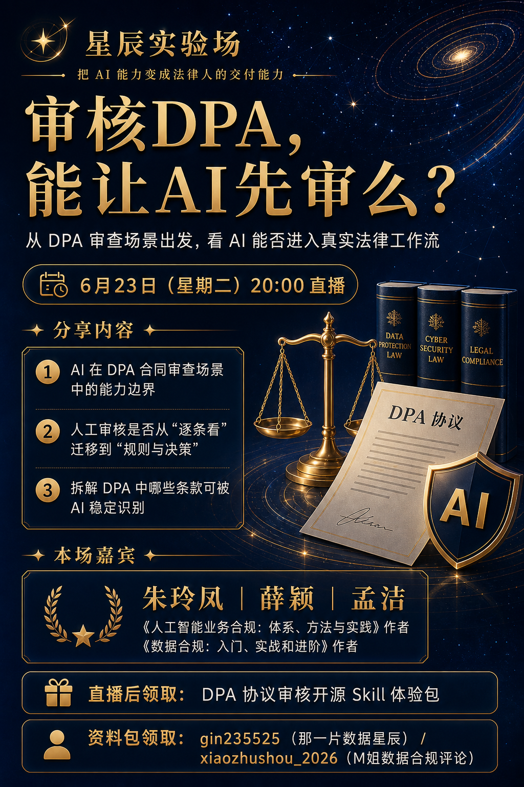
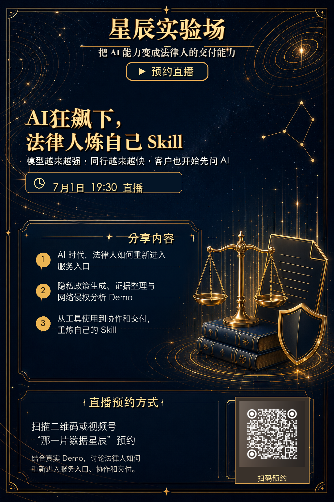
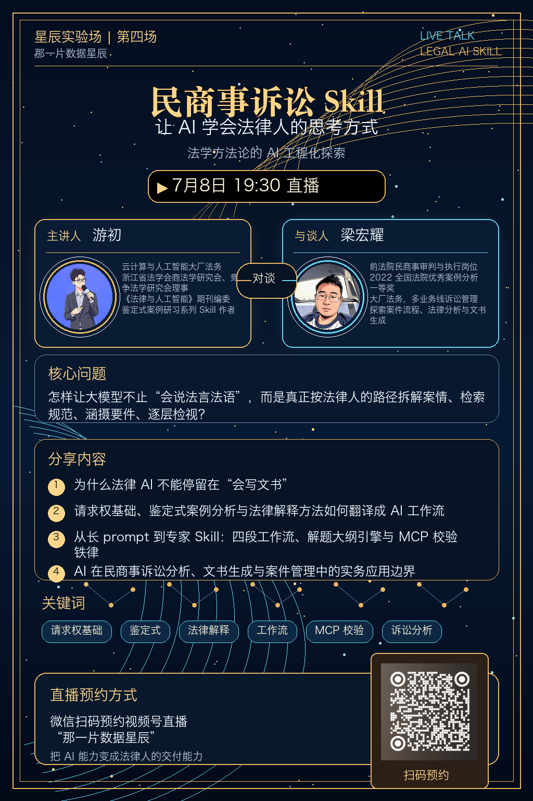
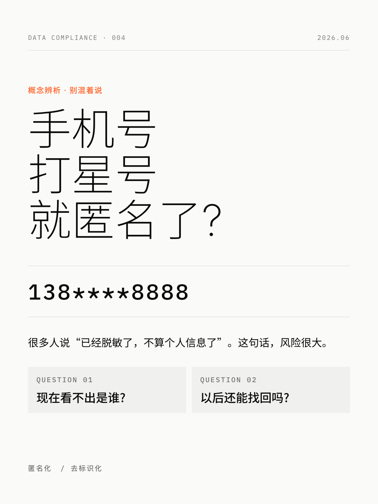

朱玲凤的个人知识宇宙DATA · AI · LAW
在数据与智能的
星图上，重新组织
法律人的专业能力。
「那一片数据星辰」关注数据保护、AI 治理与法律 AI 工作流。这里分享研究、书籍与真实实践，也把法律人的经验变成人人可用、可复核、可持续更新的开源 Skill。
我是朱玲凤。
一名持续站在变化前沿的法律人。
从数据合规、隐私保护到 AI 治理，我长期关注技术如何改变规则，也关注法律人如何在技术变化里重新理解自己的专业。
我写书、做研究，也把 AI 放进真实工作：拆解合同审核、隐私政策、合规评估与内容生产，把散落在个人经验里的判断，变成可以复用的流程、Skill 与知识系统。
法律人的价值，不只是“我很专业”，而是能不能把专业能力重新组织起来。
从一本书，到一整套持续生长的知识系统。
三个开源 Skill，
把专业方法变成可复用的工作流。
从合同与 DPA 审核，到 AI 合规资讯的持续表达：每个 Skill 都以具体任务为入口，提供可运行、可复核、可继续生长的能力骨架。
SKILL / 001
DPA 协议审核 Skill
面向数据处理协议、数据保护附则与相关服务条款的分阶段审核工作流：先还原数据处理事实，再完成风险审查、修改建议、谈判清单与内部升级说明。
前往 GitHub 免费获取SKILL / 002
合同审核 Skill Starter
一个面向中文法律场景、可二次开发的合同审核工作流骨架。覆盖 NDA、服务采购与 SaaS 数据使用基础条款，并用审查画像、Scope Check 和风险分级组织判断。
前往 GitHub 免费获取SKILL / 003
新闻播客生成 Skill
把 3–5 条新闻或研究材料转成短播客工作包：口播稿、shownotes、MP3 音频与可选 RSS 元数据，适合 AI 治理、数据保护与合规资讯的持续更新。
前往 GitHub 免费获取星辰实验场：
把 AI 能力变成法律人的交付能力。
每一场都是一张预约海报，也是一份真实任务的公开邀请：从 DPA 审查、职业变化，到 Skill 构建和民商事诉讼方法论，讨论 AI 如何进入法律人的实际交付。

审核 DPA，能让 AI 先审么？
从 DPA 审查场景出发，看 AI 能否进入真实法律工作流。
35岁法律人，怎么找到职业第二曲线？
过去人茶话会，聊法律人的职业变化与真实路径。

AI 狂飙下，法律人炼自己 Skill
从工具使用走向协作与交付，重炼自己的 Skill。

民商事诉讼 Skill
让 AI 学会法律人的思考方式：法学方法论的工程化探索。

从一个概念，走进一个可以行动的判断框架。
公众号写深度，小红书做概念辨析，B站与视频号讲 Skill 实操，播客连接全球监管现场。不同媒介，最终都回到同一个问题：法律与合规工作如何真正落地。
在你习惯的平台，
找到同一片数据星辰。
各平台入口会持续补全。公众号「那一片数据星辰」是直播、资料与长期文章的首发地。
开源不是终点，
它是专业能力共同生长的起点。
现阶段，我们用开源 Skill、免费直播与公开内容，验证哪些真实法律任务值得被重新设计。未来会围绕被验证的需求，逐步开放更专业的能力。
所有工具与内容仅供学习、测试和专业复核参考，不构成法律意见，也不替代律师或法务的正式审查。